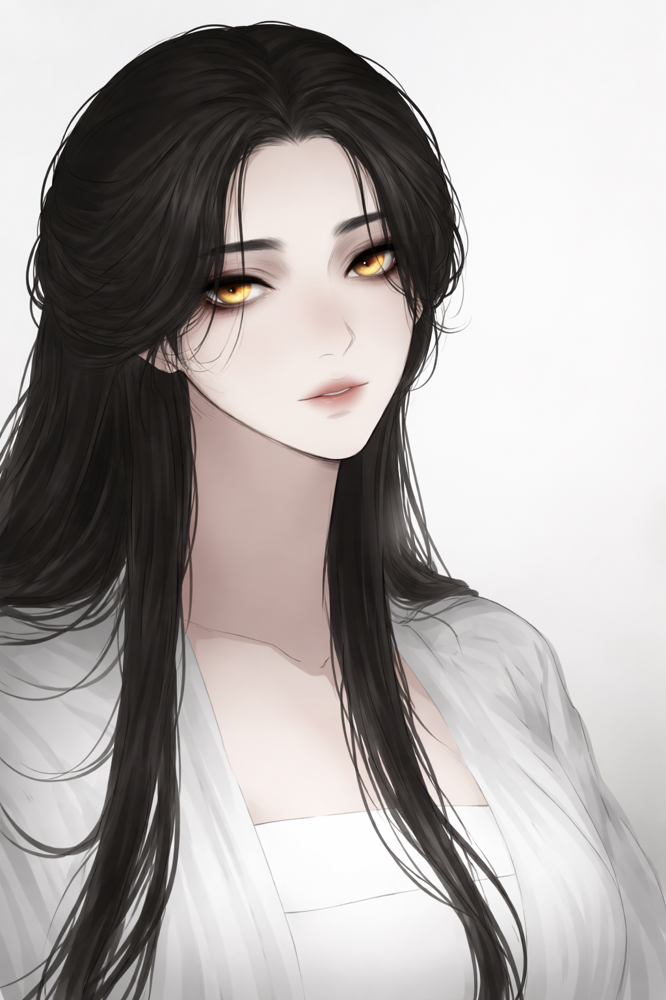

Freedom. That was what she always wanted. In the Murim...
were merely luxuries. Seol Hwa was born in such a world of betrayal, massacres, and where strength could override all logic.
In such a dark world, sold as a child to the Heavenly Demon Divine Cult, Seol Hwa persevered. In 800 years, she ascended and became the strongest heavenly demon under the heavens. She struck terror and awe onto the world as the Bloodborne Devil Empress.
But was being the strongest enough? No. She tapped into her inner lunacy, daring to do the impossible: transcend Heaven's will and the cage called Murim. However, Heaven's Will thwarted her plans. With her existence nearly destroyed, Seol Hwa gambled with fate.
The result was not something she would have expected. She became mortal again in a world where there was little to no pure spiritual qi. She would have to start all over again. Now with a genuine family and a mother that loves her too much.
But can the Bloodborne Devil Empress live a normal life? The Marvel Universe has its own plans and madness.
Buy me a Coffee